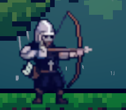

A fast-paced 2D platformer with 3 complete levels, built with a 2-person team under a tight deadline. The player progresses by evading or neutralizing enemies, collecting coins, and reaching each level's goal, with difficulty ramping up as they go.
Built with a 2-person team under a tight deadline, this project aimed for an optimized code structure and modular system design that ensured all 3 levels shipped fully playable and complete.
Beyond the gameplay systems, real attention went into UI/UX as well — from in-game HUD elements to menu flow and visual polish. Despite the short development window, the goal was for the game to feel complete and cohesive rather than merely functional.

This project taught me a lot about time management and prioritization, team collaboration and task distribution, and rapid prototyping and iteration. Working with a 2-person team under a tight deadline meant making clear calls about which systems needed to be finished first and dividing tasks effectively. Building a modular, reusable code structure let me iterate quickly without breaking existing systems, an experience that helped me internalize a rapid-prototyping mindset.